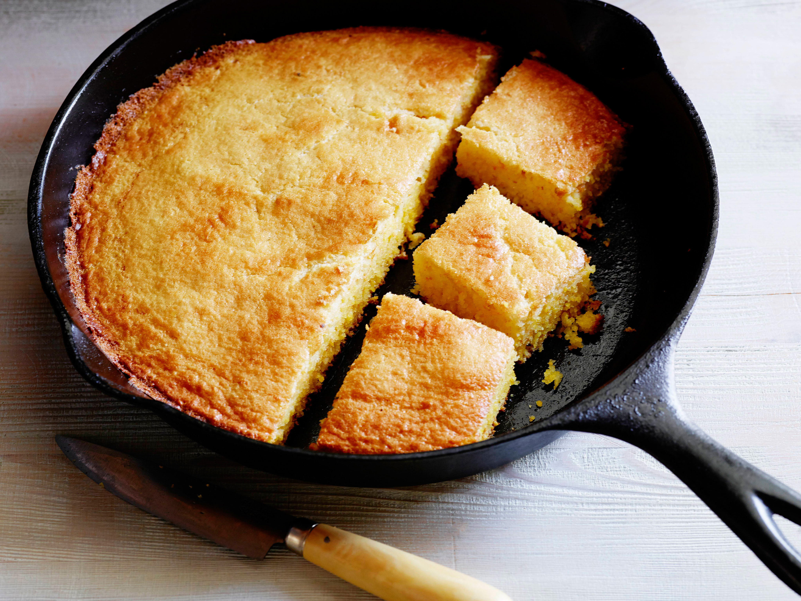

Summary:
This recipe is Old Timey all the way through! From the bacon grease-lined cast iron skillet, to the buttermillk-based batter, this cornbread recipe
literally will make you want to slap yo mama it's so good!
Ingredients
- 1 1/4 cups coarsely ground cornmeal
- 3/4 cup all-purpose flour
- 1/4 cup granulated sugar
- 1 teaspoon kosher salt
- 2 teaspoons baking powder
- 1/2 teaspoon baking soda
- 1/3 cup whole milk
- 1 cup buttermilk
- 2 eggs, lightly beaten
- 8 tablespoons unsalted butter, melted
Preparation & Cooking Instructions:
-
Preheat the oven to 425 degrees F and place a 9-inch cast iron skillet inside to heat while you make the batter.
-
In a large bowl, whisk together the cornmeal, flour, sugar, salt, baking powder, and baking soda. Whisk in the milk,
buttermilk, and eggs. Whisk in almost all of the melted butter, reserving about 1 tablespoon for the skillet later on.
-
Carefully remove the hot skillet from the oven. Reduce oven temperature to 375 degrees F. Coat the bottom and sides of
the hot skillet with the remaining butter. Pour the batter into the skillet and place it in the center of the oven.
Bake until the center is firm and a cake tester or toothpick inserted into the center comes out clean, 20 to 25 minutes.
Allow to cool for 10 to 15 minutes and serve.
Return Home